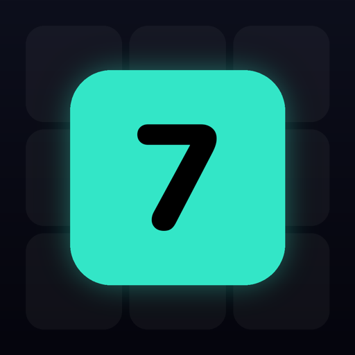

素因数で消す、落ちものパズル。
PRIME DROP は、落ちてくる数を素数で割って消していくパズルです。
84 が落ちてきたら、2 → 2 → 3 → 7。1 になった瞬間、タイルは消えます。
これは計算ドリルではありません。どの数から手を付けるか、どのタイルをまとめて処理するか、手数の重い大きな素因数をいつ片付けるか。判断を間違えると盤面が詰まります。
割り切れない素数を押してもすぐには終わりません。盤面がせり上がり、じわじわ首が絞まっていく。崩れかけた盤面を立て直せたときが、いちばん気持ちいい。
App Store にて近日公開ハイスコアなどの記録はすべて端末の中にだけ保存されます。開発者のサーバーもアカウント登録もありません。広告の配信のために Google AdMob を利用しています。
ご質問・不具合のご報告は kkantajh0108@gmail.com までお寄せください。